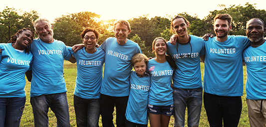
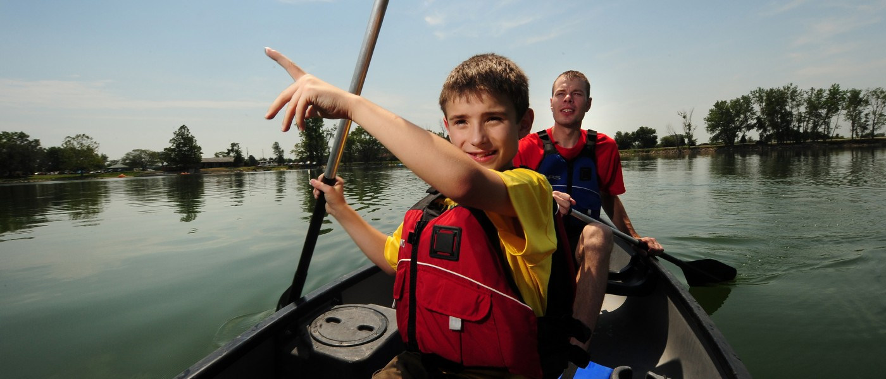

Who we are?
We Care is a part of "Friends of we care foundation" which is a network of 84 Member Sponsor organizations from the Foodservice and Hospitality Industry united by a common goal of bringing joy to kids with disabilities.
Manufacturers, distributors, operators and brokers as well as cold storage, management and marketing companies lend their time, money, and their hearts to help send Canadian children with disabilities to specialized Easter Seals summer camps.
Member Sponsors are an integral part of our organization as their annual membership fees covers all of our operating expenses. That means 100% of the funds raised through donations and from our various events across Canada goes directly to funding joyful and memorable camp experiences across the country.
Since few years, enlightened companies, generous donors and committed volunteers have helped us raise over $19,500,000 to send over 38,000 children to summer camps across Canada. What that adds up to is a whole lot of fun for some very special kids!
Mission Statement
Sending kids with disabilities to camp through the collaborative efforts of the Foodservice and Hospitality community.
Vision..
Enabling kids with disabilities to realize their full potential.